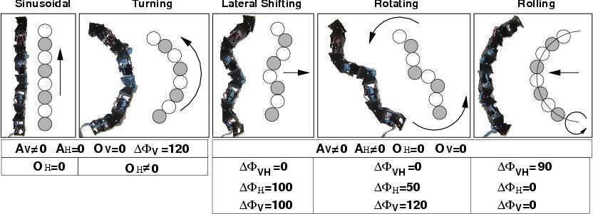

Next: Bibliography Up: Locomotion Capabilities of a Previous: 6 Experiments


Next: Bibliography
Up: Locomotion
Capabilities of a Previous:
6
Experiments
A classification for the modular
robots has been proposed based on the topology and the type of
connection between the modules. Pitch-yaw connecting robots are a
sub-group of snake robots in which the modules rotate around the
pitch and yaw axes. The locomotion capabilities of an eight pitch-yaw
connecting robot has been implemented and studied on a real robot.
Five different gaits have been achieved: 1D sinusoidal, turning,
lateral shift, rotating and rolling. All of them have been
implemented using a sinusoidal CPG approach. We have realized all
gaits mentioned above and concluded the relationship of the different
phases and the locomotion capabilities. The information is summarized
in Fig.
 .
.
The successful experiments confirm the principles of CPGs and the locomotion capabilities of pitch-yaw-connecting modular robots. All the gaits can be described by means of seven parameters: amplitude for the vertical and horizontal joints (Av,Ah), the offset (Ov, Oh ), the phase difference between two adjacent vertical and horizontal joints (Fv, Fh) and the phase difference between horizontal and vertical modules (Fhv ).
The lateral shift, rotating and rolling gaits only differ in terms of their phase difference. That means that the phase difference is the key parameter determining the characteristics of gaits.
All of the research results can be directly implemented in the self-reconfigurable robot which is our ultimate research object.
Currently, we are studying the climbing properties of the pitch-yaw-connecting configuration and the locomotion capabilities of 2D and 3D configurations. Also, a new generation of modules are being designed.
|
 |
|
Figure: The five different gaits the robot can perform and the CPGs parameters realization |


Next: Bibliography
Up: Locomotion
Capabilities of a Previous:
6
Experiments